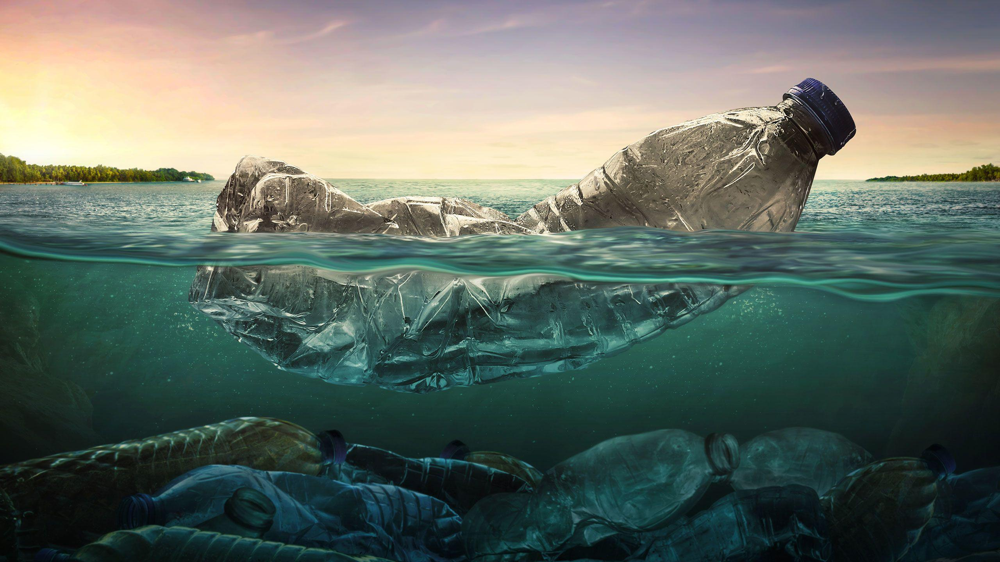
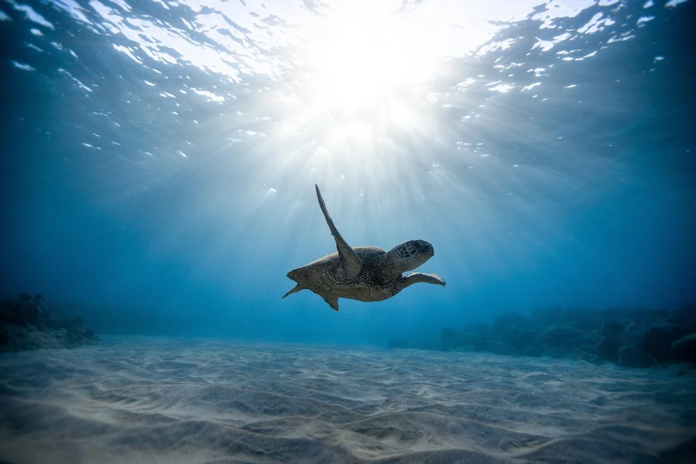

Nous sommes une association fictive qui à été crée en juillet 2023 pour une évaluation sur les language HTML/CSS ainsi que BOOTSTRAP. Notre objectif principal est la protection des océans (faune et flore). L'association participe également à lutter contre le réchauffement climatique.
Les pollutions exercées par les activités humaines asphyxient gravement le climat, et tous les océans avec la faune et la flore qui y vivent. Aujourd’hui l’urgence est absolue : les scientifiques du monde entier s’accordent à le proclamer unanimement via les rapports du GIEC. Aujourd’hui l’urgence est absolue. Il est temps de changer nos mauvaises ou anciennes habitudes et d’entamer des actions concrètes pour participer à la préservation des Océans, de notre santé et se soucier enfin urgemment de ce qu’on va laisser aux prochaines générations.